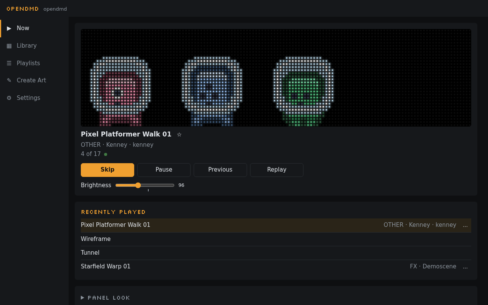
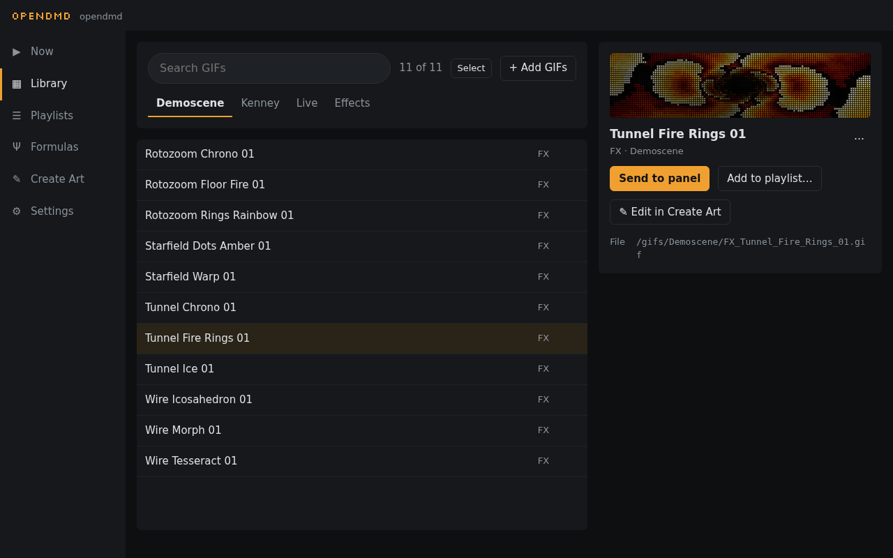
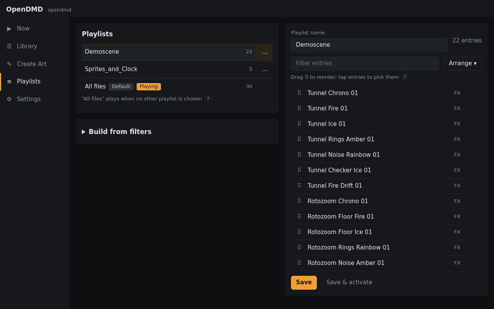
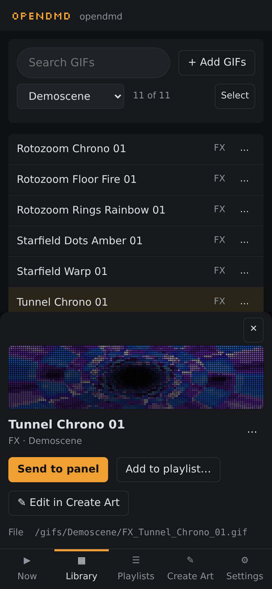

The web app#
Everything about your display is managed from a web page the player serves itself: open http://opendmd.local/ on any phone, tablet or computer on the same WiFi. There is nothing to install.
On a computer the views are listed down the left side; on a phone they are along the bottom: Now, Library, Create Art, Playlists and Settings.
Want to look around first? The demo is the same app running in your browser, with a few sample animations.
Now#

What the panel is showing right now: the title, platform and category, and a moving preview of it drawn the way the LEDs look. Use it as a remote: Skip to the next GIF, Pause and Resume, and drag the brightness slider.
Missed something? Recently played under the preview lists what the panel showed last, even while no page was open: tap one to play it again. Play again restarts what is on now, and Previous steps back one at a time.
When a schedule or night mode is in charge, Now says so, and Wake for an hour brings the panel back for a while.
Library#

Every GIF on your card. Search by title, pick a category from the tabs (these are the folders on your card), or narrow it down by platform with the chips underneath.
Click a GIF to open its details: a preview, its title, platform, category and author, and what you can do with it:
- Send to panel plays it now; afterwards the playlist carries on.
- Add to playlist… puts it in a playlist. Select several GIFs to add them all at once.
- Edit in Create Art opens it in Create Art to change it.
- Edit details… changes its title, platform, category or author. The GIF is renamed on the card and every playlist keeps up.
- Delete… removes it from the card and from every playlist, after asking first.
Adding GIFs. Press + Add GIFs and pick files from your computer or phone. For each one, give it a title, a platform, a category (or a new one) and, if you like, an author. The app suggests a title from the file name and shows the name the GIF will get on the card. Afterwards it offers to add the new GIFs to the playlist that's playing. Each GIF also gets a lighter copy for smooth playback, made as it uploads; you don't need to do anything.
Smooth motion. Some GIFs scroll or move in jumpy steps of a few pixels. When the app spots one, a Smooth motion switch appears under its preview. Turn it on and the panel fills in the in-between steps so it glides instead. Your GIF file isn't changed, and you can switch it off again any time.
Live and Effects are two extra tabs with things the panel draws by itself: a clock, scrolling text, and animated effects. See Effects and live items.
Playlists#

A playlist is the set of GIFs the panel cycles through. All files is the default and plays everything listed on your card; Halloween and Christmas appear too if your card has those lists.
- Make one: pick GIFs in the Library and choose Add to playlist… → New playlist…, or open Build from filters to make one from platforms, categories and title words (say, every SNES and Mega Drive game with "Mario" in it). Shuffle and a limit are there too.
- Edit one: open it, drag the ⠿ handles to reorder, pick entries to remove them, then Save.
- Switch to one: Save & activate while editing, or Activate from a playlist's … menu. The panel switches over in a few seconds.
Favourites and hiding#
Right-click a GIF in the Library or a playlist (long-press on a phone, or use its … button) to tune how it plays in that playlist:
- Favourite: plays more often.
- Play less often.
- Hide from this playlist: never plays there.
- Play longer and Loop: stays on screen for longer, or plays a set number of times.
These are per playlist, so a GIF can be a favourite in one and hidden in another. Reset puts it back to normal.
Settings#
The everyday settings are at the top and save as you change them:
- Playback: brightness, how long each GIF stays on (Dwell min / max), which playlist plays, a platform filter and Shuffle. Here too: Colour, to show everything in full colour or in a single colour like a classic dot-matrix display (amber, red, green, blue or white), and Phosphor glow, which makes dots fade out softly like an old plasma display.
- Transition: how one GIF gives way to the next (dissolve, wipe, blinds, push, fade or none) and how fast.
- Start-up: the little show the panel plays when it powers on.
- Power: Maximum brightness, a ceiling for the brightness slider. Going above the suggested level can make the display reset on the power supply it came with, so only raise it if you've fitted a stronger one.
Open Advanced for the rest:
- Time sets your time zone, for the clock and schedules.
- Schedule picks a playlist or brightness for certain days and times ("weekday evenings: Consoles"). The first rule that matches wins, and your normal settings come back when it ends.
- Night mode turns the panel off, or dims it, every night between the times you choose.
- Follow RePlayOS links the display to a RePlayOS gaming box: when you start a game, the panel shows the console's logo, a title card and art for that game; in the menus it plays a playlist of your choice. Turn on NET CONTROL on the box, then enter its address and code here and press Test.
- Playback cache shows how many GIFs have a lighter copy ready. The player makes these by itself while the panel is idle; Prepare remaining files does the rest now from your browser.
- Network changes the WiFi network or the player's name (
opendmdinopendmd.local). These need a reboot. - Panel timing is for a panel that shows a few wrong-coloured dots on some pictures: each change is tried for a minute and undone unless you press Keep (see Troubleshooting).
- Firmware shows the version and installs updates (see Updating).
- Security can require a key before the player can be controlled, for shared networks. The web app asks for it once.
On a phone#

Everything works on a phone too. The details of a GIF slide up from the bottom, and long-press replaces right-click.